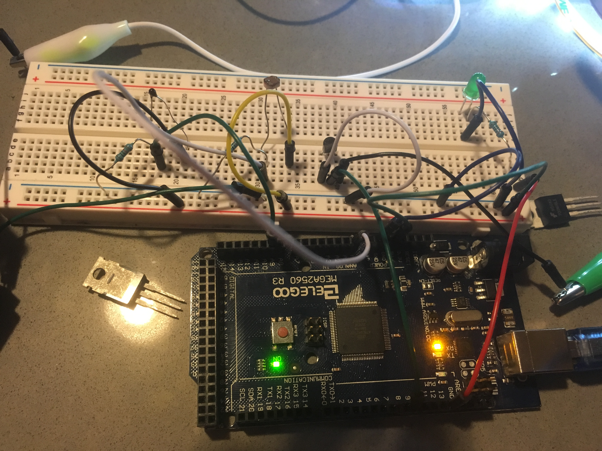
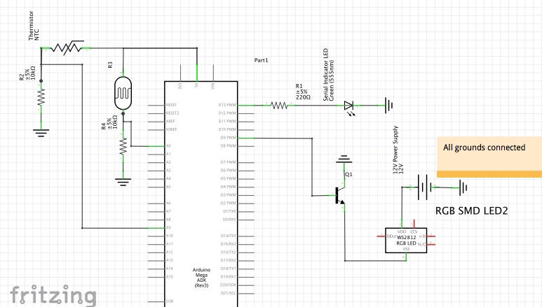

Computer Control!
Assignment: Create a webpage with p5.js with 2 way communication, JSON parsing, 2in/1out devices.
Image: Circuit
The LDR and thermistor use 10kOhm resistors to provide a useful range of output values.
The white alligator clip connects the 12V power supply power to the LED strip power.
The green alligator clip connects the LED strip ground to the transistor.

Gif: Circuit/webpage Operation
The red and orange circles represent input from the LDR and Thermistor - they tell you the ambient brightness and warmth.
The white circle represents the brightness of the LED strip and is controlled by the slider.

Circuit Schematic

Arduino Code
int STRIPPIN = 9; //Pin for controlling LED Strip
int LDRPIN = A0; //Pin for light dependent resistor
int THERMPIN = A9; //Pin for thermistor
byte ledval; //Brightness value of LED strip
int ldrval, thermval;//Values from LDR and thermistor
void setup() {
Serial.begin(9600); // Serial for commuication to p5
Serial.setTimeout(10); //How long to look for serial data
pinMode(STRIPPIN, OUTPUT); //write to led strip
pinMode(LDRPIN, INPUT); //read from LDR
pinMode(THERMPIN, INPUT); //read from thermistor
ledval = 80; //initial value
}
void loop() {
//Check if serial data available
while (Serial.available() > 0) { // if there's serial data
ledval = Serial.read(); //Read data for LED strip brightness from webpage slider
//Flash green led when data received
digitalWrite(13, HIGH);
delay(1);
digitalWrite(13, LOW);
}
ldrval = analogRead(LDRPIN); //read value from light dependent resistor
thermval = analogRead(THERMPIN); //read value from thermistor
writeArray(thermval, ldrval); //write thermistor and LDR values to serial
analogWrite(9, ledval); //Write brightness from webpage to LED strip
delay(200); //wait 200 ms
}
//Write a 2 byte array to serial
void writeArray(byte b1, byte b2) {
Serial.print("[");
Serial.print(b1);
Serial.print(",");
Serial.print(b2);
Serial.println("]");
}
sketch.js code - draw value from Arduino LDR and Thermistor and control LED Strip
var serial; // variable to hold an instance of the serialport library
var portName = '/dev/cu.usbmodem1411'
var xPos = 0;
var dataarray;
var bVal;
var lightLevel; //Store value from LDR
var tempLevel; //Store val from thermistor
function setup() {
serial = new p5.SerialPort(); // make a new instance of the serialport library
serial.on('list', printList); // set a callback function for the serialport list event
serial.on('connected', serverConnected); // callback for connecting to the server
serial.on('open', portOpen); // callback for the port opening
serial.on('data', serialEvent); // callback for when new data arrives
serial.on('error', serialError); // callback for errors
serial.on('close', portClose); // callback for the port closing
serial.list(); // list the serial ports
serial.open(portName); // open a serial port
createCanvas(1200, 800);
background(0x08, 0x16, 0x40);
bSlider = createSlider(0, 255, 255);
bSlider.position(width/2-80, 80);
//setInterval(sendSliderDat, 500);
}
// get the list of ports:
function printList(portList) {
// portList is an array of serial port names
for (var i = 0; i < portList.length; i++) {
// Display the list the console:
print(i + " " + portList[i]);
}
}
function serverConnected() {
print('connected to server.');
}
function portOpen() {
print('the serial port opened.')
}
function serialError(err) {
print('Something went wrong with the serial port. ' + err);
}
function portClose() {
print('The serial port closed.');
}
/*
function serialEvent() {
if (serial.available()) {
datain = Number(serial.read());
console.log("data in: " + datain);
}
}
*/
function serialEvent() {
if (serial.available()) {
var datastring = serial.readLine(); // readin some serial
var newarray;
try {
newarray = JSON.parse(datastring); // can we parse the serial
console.log("got back " + datastring);
} catch(err) {
//console.log(err);
}
if (typeof(newarray) == 'object') {
dataarray = newarray;
tempLevel = dataarray[0];
lightLevel = dataarray[1];
}
}
}
//Send position data from the slider to arduino
//Controls LED Strip
function sendSliderDat() {
bVal = bSlider.value();
serial.write(bVal);
//console.log("bVal: " + String(bVal));
}
function draw() {
background(0); //Refresh background
sendSliderDat(); //Send slider data to arduino
fill(255); //White
text("LED Strip Brightness", width/2-70, 60); //LED status text
ellipse(width/2, height/4+100, bVal, bVal); //LED status ellipse - size correlates to brightness
fill(255,50,50); //Red
text("Room Brightness", width/2-370, 60); //LDR Text
ellipse(width/2-300, height/4+100, lightLevel*2, lightLevel*2); //LDR status ellipse - size correlates to value
fill(255,165,50); //Orange
text("Room Temperature", width/2+230, 60); //Thermistor text
ellipse(width/2+300, height/4+100, tempLevel, tempLevel); //Thermistor status ellipse - size correlates to value
}